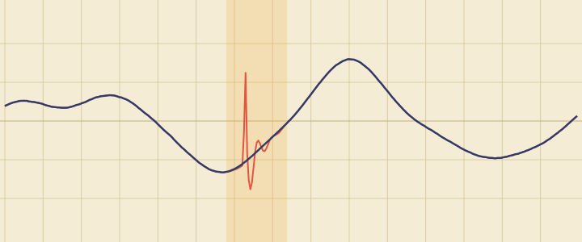

01
Listen
ClickNet, a neural detector of just 20,116 parameters (about 80 KB), reads the audio with 10.7 ms of look-ahead and flags only the samples a click has damaged. It looks for sharpness, not loudness, so a loud drum hit is not a click.
Click & pop removal for vinyl listening and transfers
Give your vinyl transfers a second pressing. A compact neural network finds clicks and pops, then rebuilds each flagged passage from the music on either side. Everything else passes through untouched, bit for bit.

How it works
01
ClickNet, a neural detector of just 20,116 parameters (about 80 KB), reads the audio with 10.7 ms of look-ahead and flags only the samples a click has damaged. It looks for sharpness, not loudness, so a loud drum hit is not a click.
02
Each flagged span is reconstructed from the music on both sides of it by autoregressive interpolation. The gap is filled with what the groove most likely held, not muted or smeared.
03
Samples outside a flagged span pass through bit for bit.2 No noise reduction, no EQ, no smoothing: the recording you came to hear, minus the clicks.
Results
Tested against reference repairs on audio from 24 albums held out of training, ClickNet R2 found more of the clicks while touching less of the music than the project's classical detector.1
| What matters for your transfer | ClickNet R2 | Classical |
|---|---|---|
| Reference clicks found | 76.5 % | 59.9 % |
| False alarms per minute | 27.5 | 49.6 |
| Reference-clean audio touched | 0.030 % | 0.131 % |
Percussion protection
A clap and a click can look alike for a few milliseconds. The difference is rhythm: claps and drums repeat on a beat. With percussion protection on, 2ndPressing looks further ahead, finds the beat grid and leaves those hits alone.
Real damage repeats too, but only once per turn of the record. A scratch that comes around exactly once per rotation is still repaired.
Lowest latency, for live monitoring.
One second of look-ahead to find the beat.
Also protects the first beats of a rhythmic passage. The default.
Latency is reported to your DAW, which compensates for it. On held-out recordings, Standard protection still found 89.4 % of reference repairs, against 91.0 % with it off.
Formats
Logic Pro, GarageBand and other Audio Unit hosts on the Mac.
Most DAWs on Mac and Windows.
Bitwig, REAPER and other CLAP hosts.
Play a turntable through any audio interface and hear it cleaned live. No DAW needed.
Batch-process saved transfers: WAV, AIFF, FLAC and ALAC.
Mono and stereo at 44.1 and 48 kHz. Runs on the CPU; no graphics card needed.
Built by a music lover with an extensively recorded LP collection who strives to build efficient and simple solutions for sensible people.
2ndPressing is in beta on the Mac and on Windows. It is open source under the GPL-3.0; the source code will be published with the first release.
To join the beta, send an email and say which computer and audio interface you use.
hello@secondpressing.comResults vary by recording.